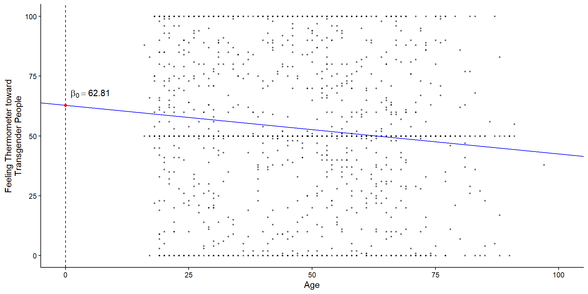
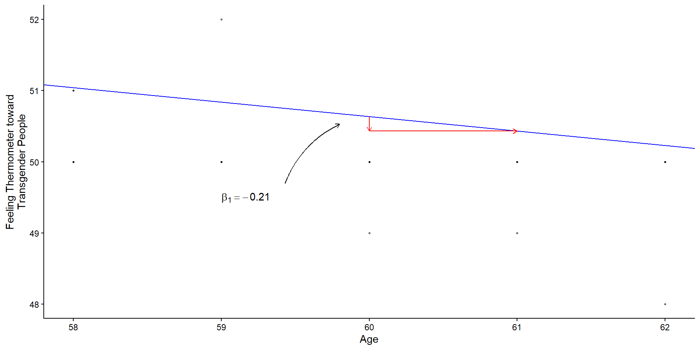
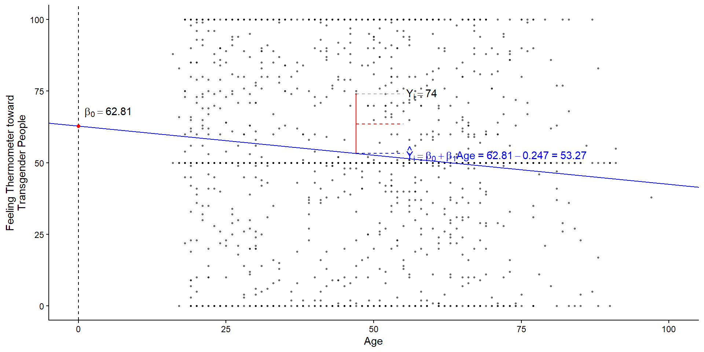
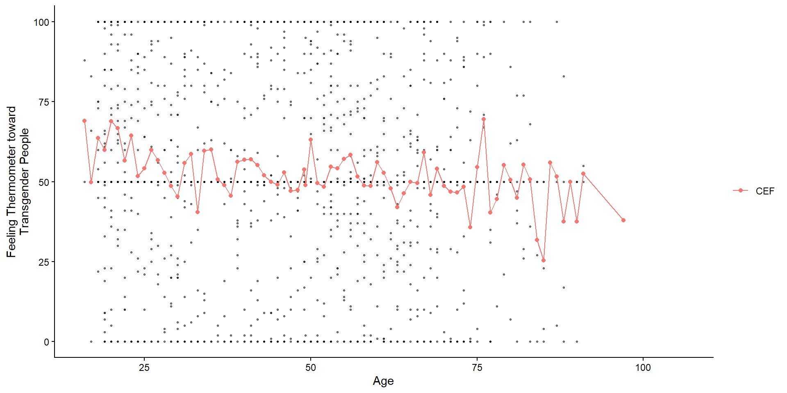
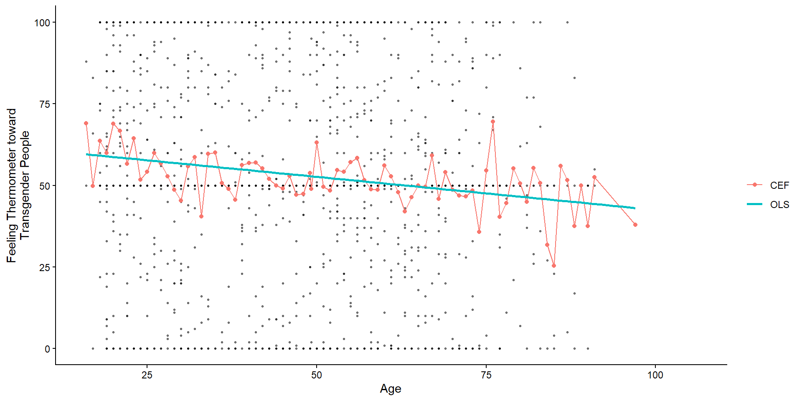
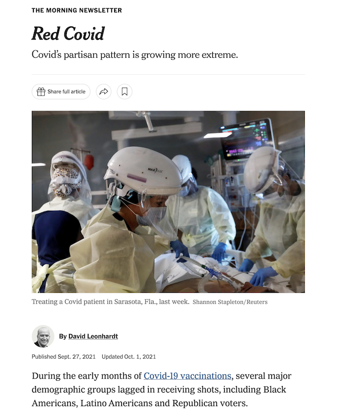
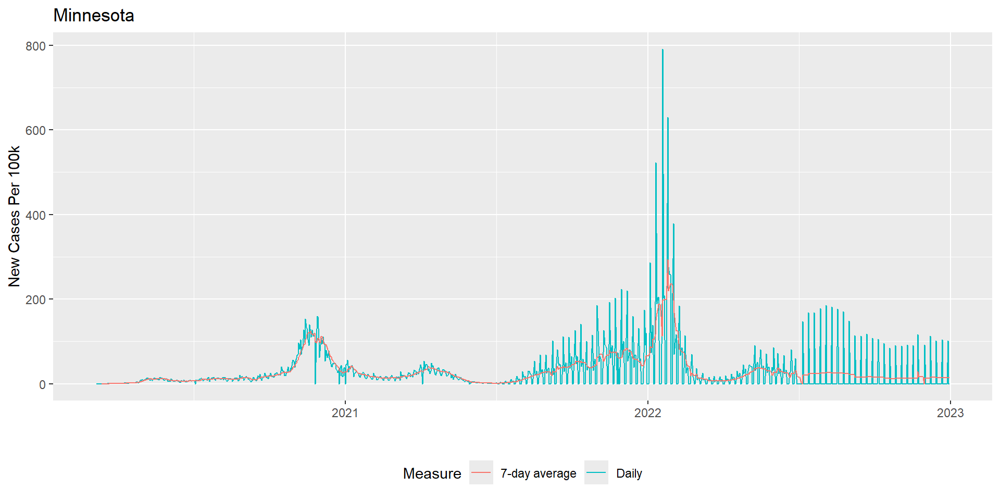

POLS 1600
Prediction I / Linear Regression
Updated Feb 24, 2026
Overview
Overview
- Class goals
- Announcements
Learning goals
Focus on making predictions with linear regression
Preview and get set up for Friday’s lab
Annoucements
Tutorial 5 due on Wednesday 3-4.
Resuming labs on Friday - link here
If any issues with last group assignment, let me know after class.
2nd group assignment next week - will be due Sunday, 3-8.
Simple Linear Regression
Understanding Linear Regression
- Conceptual
- Simple linear regression estimates “a line of best fit” that summarizes relationships between two variables
\[ y_i = \beta_0 + \beta_1x_i + \epsilon_i \]
- Practical
- We estimate linear models in R using the
lm()function
- We estimate linear models in R using the
Understanding Linear Regression
- Technical/Definitional
- Linear regression chooses \(\beta_0\) and \(\beta_1\) to minimize the Sum of Squared Residuals (SSR):
\[\textrm{Find }\hat{\beta_0},\,\hat{\beta_1} \text{ arg min}_{\beta_0, \beta_1} \sum (y_i-(\beta_0+\beta_1x_i))^2\]
- Theoretical
- Linear regression provides a linear estimate of the conditional expectation function (CEF): \(E[Y|X]\)
Conceptual: Linear Regression
Conceptual: Linear Regression
Regression is a tool for describing relationships.
How does some outcome we’re interested in tend to change as some predictor of that outcome changes?
How does economic development vary with democracy?
- Or how does democracy vary with economic development…
How does economic development vary with democracy, adjusting for natural resources like oil and gas
Conceptual: Linear Regression
More formally:
\[ y_i = f(x_i) + \epsilon \]
Y is a function of X plus some error, \(\epsilon\)
Linear regression assumes that relationship between an outcome and a predictor can be described by a linear function
\[ y_i = \beta_0 + \beta_1 x_i + \epsilon \]
Linear Regression and the Line of Best Fit
- The goal of linear regression is to choose coefficients \(\beta_0\) and \(\beta_1\) to summarizes the relationship between \(y\) and \(x\)
\[ y_i = \beta_0 + \beta_1 x_i + \epsilon \]
To accomplish this we need some sort of criteria.
For linear regression, that criteria is minimizing the error between what our model predicts \(\hat{y_i} = \beta_0 + \beta_1 x_i\) and what we actually observed \((y_i)\)
More on this to come. But first…
Regression Notation
\(y_i\) an outcome variable or thing we’re trying to explain
- AKA: The dependent variable, The response variable, The left hand side of the model
\(x_i\) a predictor variables or things we think explain variation in our outcome
AKA: The independent variable, covariates, the right hand side of the model.
Cap or No Cap: I’ll use \(X\) (should be \(\mathbf{X}\)) to denote a set (matrix) of predictor variables. \(y\) vs \(Y\) can also have technical distinctions (Sample vs Population, observed value vs Random Variable, …)
\(\beta\) a set of unknown parameters that describe the relationship between our outcome \(y_i\) and our predictors \(x_i\)
\(\epsilon_i\) the error term representing variation in \(y_i\) not explained by our model.
\(\hat{\epsilon_i}\) is a residual, or an estimate of the error, given a model.
Linear Regression
- We call this a bivariate regression, because there are only two variables
\[ y_i = \beta_0 + \beta_1 x_i + \epsilon_i \]
We call this a linear regression, because \(y_i = \beta_0 + \beta_1 x_i\) is the equation for a line, where:
\(\beta_0\) corresponds to the \(y\) intercept, or the model’s prediction when \(x = 0\).
\(\beta_1\) corresponds to the slope, or how \(y\) is predicted to change as \(x\) changes.
Linear Regression
- If you find this notation confusing, try plugging in substantive concepts for what \(y\) and \(x\) represent
- Say we wanted to know how attitudes to transgender people varied with age in the baseline survey from Lab 03.
The generic linear model
\[y_i = \beta_0 + \beta_1 x_i + \epsilon_i\]
Reflects:
\[\text{Transgender Feeling Thermometer}_i = \beta_0 + \beta_1\text{Age}_i + \epsilon_i\]
Practical: Estimating a Linear Regression
Practical: Estimating a Linear Regression
- We estimate linear regressions in
Rusing thelm()function. lm()requires two arguments:- a
formulaargument of the general formy ~ xread as “Y modeled by X” or below “Transgender Feeling Thermometer (y) modeled by (~) Age (x) - a
dataargument telling R where to find the variables in the formula
- a
The lm() function
The coefficients from lm() are saved in object called m1
Call:
lm(formula = therm_trans_t0 ~ vf_age, data = df)
Coefficients:
(Intercept) vf_age
62.8196 -0.2031 m1 actually contains a lot of information
Practical: Interpreting a Linear Regression
We can extract the intercept and slope from this simple bivariate model, using the coef() function
Practical: Interpreting a Linear Regression
The two coefficients from m1 define a line of best fit, summarizing how feelings toward transgender individuals change with age
\[y_i = \beta_0 + \beta_1 x_i + \epsilon_i\]
\[\text{Transgender Feeling Thermometer}_i = \beta_0 + \beta_1\text{Age}_i + \epsilon_i\]
\[\text{Transgender Feeling Thermometer}_i = 62.82 + -0.2 \text{Age}_i + \epsilon_i\]
Practical: Predicted values from a Linear Regression
Often it’s useful for interpretation to obtain predicted values from a regression.
To obtain predicted vales \((\hat{y})\), we simply plug in a value for \(x\) (In this case, \(Age\)) and evaluate our equation.
For example, might we expect attitudes to differ among an 18-year-old college student and their 68-year-old grandparent?
\[\hat{FT}_{x=18} = 62.82 + -0.2 \times 18 = 59.16\] \[\hat{FT}_{x=65} = 62.82 + -0.2 \times 68 = 49.01\]
Practical: Predicted values from a Linear Regression
We could do this by hand
Practical: Predicted values from a Linear Regression
More often we will:
- Make a prediction data frame (called
pred_dfbelow) with the values of interests - Use the
predict()function with our linear model (m1) andpred_df - Save the predicted values to our new column in our prediction data frame
Practical: Predicted values from a Linear Regression
Practical: Visualizing Linear Regression
We can visualize simple regression by:
plotting a scatter plot of the outcome (y-axis) and predictors (x-axis)
overlaying the line defined by
lm()
load(url("https://josephessig-source.github.io/pols1600_site/files/data/03_lab.rda"))
fig_lm <-
ggplot(data=df, mapping=aes(vf_age,therm_trans_t0))+
geom_point(size=.5, alpha=.5)+
geom_abline(intercept = coef(m1)[1],
slope = coef(m1)[2],
col = "blue"
)+
geom_vline(xintercept = 0,linetype = 2)+
xlim(0,100)+
annotate("point",
x = 0, y = coef(m1)[1],
col= "red",
)+
annotate("text",
label = "beta[0] == 62.81",
parse = TRUE,
x = 1, y = coef(m1)[1]+5,
hjust = "left",
)+
labs(
x = "Age",
y = "Feeling Thermometer toward\nTransgender People"
)+
theme_classic() -> fig_lm


Technichal: Mechanics of Linear Regression
How did lm() choose \(\beta_0\) and \(\beta_1\)
P: By minimizing the sum of squared errors, in procedure called Ordinary Least Squares (OLS) regression
Q: Ok, that’s not really that helpful…
- What’s an error?
- Why would we square and sum them
- How do we minimize them.
P: Good questions!
What’s an error? What’s a residual
Recall an error, \(\epsilon_i\), is the deviation of from an unknown true model
\[ y_i = f(x_i) + \epsilon_i \]
A residual, \(\hat{\epsilon_i}\) is an estimate of the error obtained by taking the difference between the observed value of \(y_i\) and what our model would predict, \(\hat{y_i}\) given some value of \(x_i\). So for a model:
\[y_i=\beta_0+\beta_1 x_{i} + \epsilon_i\]
We simply subtract our model’s prediction \(\beta_0+\beta_1 x_{i}\) from the observed value, \(y_i\)
\[\hat{\epsilon_i}=y_i-\hat{y_i}=(Y_i-(\beta_0+\beta_1 x_{i}))\]
Why are we squaring and summing \(\epsilon\)
There are more mathy reasons for this, but at intuitive level, the Sum of Squared Residuals (SSR)
Squaring \(\epsilon\) treats positive and negative residuals equally.
Summing produces single value summarizing our models overall performance.
There are other criteria we could use (e.g. minimizing the sum of absolute errors), but SSR has some nice properties
How do we minimize \(\sum \epsilon^2\)
OLS chooses \(\beta_0\) and \(\beta_1\) to minimize \(\sum \epsilon^2\), the Sum of Squared Residuals (SSR)
\[\textrm{Find }\hat{\beta_0},\,\hat{\beta_1} \text{ arg min}_{\beta_0, \beta_1} \sum (y_i-(\beta_0+\beta_1x_i))^2\]
How did lm() choose \(\beta_0\) and \(\beta_1\)
In an intro stats course, we would walk through the process of finding
\[\textrm{Find }\hat{\beta_0},\,\hat{\beta_1} \text{ arg min}_{\beta_0, \beta_1} \sum (y_i-(\beta_0+\beta_1x_i))^2\] Which involves a little bit of calculus. The big payoff is that
\[\beta_0 = \bar{y} - \beta_1 \bar{x}\] And
\[ \beta_1 = \frac{Cov(x,y)}{Var(x)}\]
Theoretical: OLS provides a linear estimate of CEF: E[Y|X]
Interpretations of Linear Regression
Timothy Lin provides a great overview of the various interpretations/motivations for linear regression.
A linear projection of \(y\) on the subspace spanned by \(X\beta\)
A linear approximation of the conditional expectation function
The Conditional Expectation Function
Of all the functions we could choose to describe the relationship between \(Y\) and \(X\),
\[ Y_i = f(X_i) + \epsilon_i \]
the conditional expectation of \(Y\) given \(X\) \((E[Y|X])\), has some appealing properties
\[ Y_i = E[Y_i|X_i] + \epsilon \]
The error, by definition, is uncorrelated with X and \(E[\epsilon|X]=0\)
\[ E[\epsilon|X] = E[Y - E[Y|X]|X]= E[Y|X] - E[Y|X] = 0 \]
Of all the possible functions \(g(X)\), we can show that \(E[Y_i|X_i]\) is the best predictor in terms of minimizing mean squared error
\[ E[ (Y - g(Y))^2] \geq E[(Y - E[Y|X])^2] \]
Linear Approximations to the Conditional Expectation Function
- We can then show (in a different class) that linear regression provides the best linear predictor of the CEF
- Chapter 3, of Mostly Harmless Econometrics
- Chapter 4 of Foundations of Agnostic Statistics
- Furthermore, when the CEF is linear, it’s equal exactly to OLS regression


What you need to know about Regression
- Conceptual
- Simple linear regression estimates a line of best fit that summarizes relationships between two variables
\[ y_i = \beta_0 + \beta_1x_i + \epsilon_i \]
- Practical
- We estimate linear models in R using the
lm()function
- We estimate linear models in R using the
What you need to know about Regression
- Technical/Definitional
- Linear regression chooses \(\beta_0\) and \(\beta_1\) to minimize the Sum of Squared Residuals (SSR):
\[\textrm{Find }\hat{\beta_0},\,\hat{\beta_1} \text{ arg min}_{\beta_0, \beta_1} \sum (y_i-(\beta_0+\beta_1x_i))^2\]
- Theoretical
- Linear regression provides a linear estimate of the conditional expectation function (CEF): \(E[Y|X]\)
Previewing the Lab
Red Covid

Red Covid New York Times, 27 September, 2021
Red Covid, an Update New York Times, 18 February, 2022
Preview of the Lab
Please download Friday’s lab here
Conceptually, this lab is designed to help reinforce the relationship between linear models like \(y=\beta_0 + \beta_1x\) and the conditional expectation function \(E[Y|X]\).
Substantively, we will explore whether David Leonhardt’s claims about Red Covid the political polarization of vaccines and its consequences
Lab: Questions 1-5: Review
Questions 1-5 are designed to reinforce your data wrangling skills. In particular, you will get practice:
- Creating and recoding variables using
mutate() - Calculating a moving average or rolling mean using the
rollmean()function from thezoopackage - Transforming the data on presidential elections so that it can be merged with the data on Covid-19 using the
pivot_wider()function. - Merging data together using the
left_join()function.
Lab: Questions 6-10: Simple Linear Regression
In question 6, you will see how calculating conditional means provides a simple test of “Red Covid” claim.
In question 7, you will see how a linear model returns the same information as these conditional means (in a sligthly different format)
In question 8, you will get practice interpreting linear models with continuous predictors (i.e. predictors that take on a range of values)
In question 9, you will get practice visualizing these models and using the figures help interpret your results substantively.
Question 10 asks you to play the role of a skeptic and consider what other factors might explain the relationships we found in Questions 6-9. We will explore these factors in next week’s lab.
Before Friday
The following slides provide detailed explanations of all the code you’ll need for each question.
Please run this code before class on Friday
We will review this material together at the start of class, but you will spend most of our time on the Questions 6-10
Q1: Setup your workspace
Q1 asks you to setup your workspace
This means loading and, if needed, installing the packages you will use
the_packages <- c(
## R Markdown
"kableExtra","DT","texreg",
## Tidyverse
"tidyverse", "lubridate", "forcats", "haven", "labelled",
## Extensions for ggplot
"ggmap","ggrepel", "ggridges", "ggthemes", "ggpubr",
"GGally", "scales", "dagitty", "ggdag", "ggforce",
# Data
"COVID19","maps","mapdata","qss","tidycensus", "dataverse",
# Analysis
"DeclareDesign", "easystats", "zoo"
)
# Define function to load packages
ipak <- function(pkg){
new.pkg <- pkg[!(pkg %in% installed.packages()[, "Package"])]
if (length(new.pkg))
install.packages(new.pkg, dependencies = TRUE, repos = "https://cloud.r-project.org")
sapply(pkg, require, character.only = TRUE)
}
ipak(the_packages) kableExtra DT texreg tidyverse lubridate
TRUE TRUE TRUE TRUE TRUE
forcats haven labelled ggmap ggrepel
TRUE TRUE TRUE TRUE TRUE
ggridges ggthemes ggpubr GGally scales
TRUE TRUE TRUE FALSE TRUE
dagitty ggdag ggforce COVID19 maps
TRUE TRUE TRUE TRUE TRUE
mapdata qss tidycensus dataverse DeclareDesign
TRUE TRUE TRUE TRUE TRUE
easystats zoo
TRUE TRUE Q2 Load the data
To explore Leonhardt’s claims about Red Covid, we’ll need data on:
- Covid-19
- The 2020 Presidential Election
Q2.1 Load the Covid-19 Data
To load data on Covid-19 just run this
Q2.2 Load Election Data
Q2.2. asks you to write code that will download data presidential elections from 1976 to 2020 from the MIT Election Lab’s dataverse
- Once you’ve installed the
dataversepackage you should be able to do this:
# Try this code first
Sys.setenv("DATAVERSE_SERVER" = "dataverse.harvard.edu")
pres_df <- dataverse::get_dataframe_by_name(
"1976-2020-president.tab",
"doi:10.7910/DVN/42MVDX"
)
# If the code above fails, comment out and uncomment the code below:
# load(url("https://josephessig-source.github.io/pols1600_site/files/data/pres_df.rda"))Q3 Describe the structure of each dataset
Question 3 asks you to describe the structure of each dataset.
- Specifically, it asks you to get a high level overview of
covidandpres_dfand describe the unit of analysis in each dataset:- Describe substantively what specific, observation each row in the dataset corresponds to
- In covid
coviddataset, the unit of analysis is a state-date
Q3 Describe the structure of each dataset
Here’s some possible code you could use to get a quick HLO of each dataset:
# check names in `covid`
names(covid)
# take a quick look values of each variable
glimpse(covid)
# Look at first few observations for:
# date, administrative_area_level_2,
covid %>%
select(date, administrative_area_level_2) %>%
head()
# Summarize data to get a better sense of the unit of observastion
covid %>%
group_by(administrative_area_level_2) %>%
summarise(
n = n(), # Number of observations for each state
start_date = min(date, na.rm = T),
end_date = max(date, na.rm=T)
) -> hlo_covid_df
hlo_covid_df
# How many unique values of date and state are their:
n_dates <- length(unique(covid$date))
n_states <- length(unique(covid$administrative_area_level_2))
n_dates
n_states
# If we had observations for every state on every date then the number of rows
# in the data
dim(covid)[1]
# Should equal
dim(covid)[1] == n_dates * n_states
# This is what economists would call an unbalanced panel# check names in `pres_df`
names(pres_df)
# take a quick look values of each variable
glimpse(pres_df)
# Unit of analysis is a year-state-candidate
pres_df %>%
select(year, state_po, candidate) %>%
head()
# How many states?
length(unique(pres_df$state_po))
# How many candidates and parties on the ballot in a given election year
pres_df %>%
group_by(year) %>%
summarise(
n_candidates = length(unique(candidate)),
# Look at both party_detailed and party_simplified
n_parties_detailed = length(unique(party_detailed)),
n_parties_simplified = length(unique(party_simplified))
) -> hlo_pres_df
hlo_pres_df
# Look at 2020
# pres_df$candidate[pres_df$year == "2020"]Q4 Recode the data for analysis
Using our understanding of the structure of the data, Q4 asks you to:
- Recode the Covid-19 data like we’ve done before plus
- Calculate rolling means, 7 and 14 day averages
- Reshape, recode, and filter the presidential election data
Q4.1 Recode the Covid-19
This is the same code we’ve used before to create covid_us from covid with the addition of code to calculate a rolling mean or moving average of the number of new cases
# Create a vector containing of US territories
territories <- c(
"American Samoa",
"Guam",
"Northern Mariana Islands",
"Puerto Rico",
"Virgin Islands"
)
# Filter out Territories and create state variable
covid_us <- covid %>%
filter(!administrative_area_level_2 %in% territories)%>%
mutate(
state = administrative_area_level_2
)
# Calculate new cases, new cases per capita, and 7-day average
covid_us %>%
dplyr::group_by(state) %>%
mutate(
new_cases = confirmed - lag(confirmed),
new_cases_pc = new_cases / population *100000,
new_cases_pc_7da = zoo::rollmean(new_cases_pc,
k = 7,
align = "right",
fill=NA )
) -> covid_us
# Recode facemask policy
covid_us %>%
mutate(
# Recode facial_coverings to create face_masks
face_masks = case_when(
facial_coverings == 0 ~ "No policy",
abs(facial_coverings) == 1 ~ "Recommended",
abs(facial_coverings) == 2 ~ "Some requirements",
abs(facial_coverings) == 3 ~ "Required shared places",
abs(facial_coverings) == 4 ~ "Required all times",
),
# Turn face_masks into a factor with ordered policy levels
face_masks = factor(face_masks,
levels = c("No policy","Recommended",
"Some requirements",
"Required shared places",
"Required all times")
)
) -> covid_us
# Create year-month and percent vaccinated variables
covid_us %>%
mutate(
year = year(date),
month = month(date),
year_month = paste(year,
str_pad(month, width = 2, pad=0),
sep = "-"),
percent_vaccinated = people_fully_vaccinated/population*100
) -> covid_usQ4.2 Calculate Rolling Means of Covid Deaths
Q4.2 asks you to create new measures of the 7-day and 14-day averages of new deaths from Covid-19 per 100,000 residents
It encourages you to use the code new_cases_pc_7da as a template
To build your coding skills, try writing this yourself, then comparing it to the code in the next tab:
covid_us %>%
dplyr::group_by(state) %>%
mutate(
new_deaths = deaths - lag(deaths),
new_deaths_pc = new_deaths / population *100000,
new_deaths_pc_7day = zoo::rollmean(new_deaths_pc,
k = 7,
align = "right",
fill=NA ),
new_deaths_pc_14day = zoo::rollmean(new_deaths_pc,
k = 14,
align = "right",
fill=NA )
) -> covid_usRolling Averages
The next slides aren’t necessary for the lab but are designed to illustrate:
- the concept of a rolling mean
- what the code does
- why might prefer rolling averages over daily values
Look at the output of zoo::rollmean()
# A tibble: 52,580 × 4
# Groups: state [51]
state date new_cases_pc new_cases_pc_7day
<chr> <date> <dbl> <dbl>
1 Minnesota 2020-03-06 NA NA
2 Minnesota 2020-03-07 0 NA
3 Minnesota 2020-03-08 0.0177 NA
4 Minnesota 2020-03-09 0 NA
5 Minnesota 2020-03-10 0.0177 NA
6 Minnesota 2020-03-11 0.0355 NA
7 Minnesota 2020-03-12 0.0709 NA
8 Minnesota 2020-03-13 0.0887 0.0329
9 Minnesota 2020-03-14 0.124 0.0507
10 Minnesota 2020-03-15 0.248 0.0836
# ℹ 52,570 more rowsComparing Daily Cases to Rolling Average
The following code illustrates how a 7-day rolling mean smooths (new_cases_pc_7da) over the noisiness of the daily measure
covid_us %>%
filter(date > "2020-03-05",
state == "Minnesota") %>%
select(date,
new_cases_pc,
new_cases_pc_7day)%>%
ggplot(aes(date,new_cases_pc ))+
geom_line(aes(col="Daily"))+
# set y aesthetic for second line of rolling average
geom_line(aes(y = new_cases_pc_7day,
col = "7-day average")
) +
theme(legend.position="bottom")+
labs( col = "Measure",
y = "New Cases Per 100k", x = "",
title = "Minnesota"
) -> fig_covid_mn 
Q4.3 Recode Presidential data
Q4.3 Gives you a long list of steps to recode, reshape, and filter pres_df to produce pres_df2020
Most of this is review but it can seem like a lot.
Walk through the provided code and see if you can map each conceptual step in Q4.3 to its implementation in the code
pres_df %>%
mutate(
year_election = year,
state = str_to_title(state),
# Fix DC
state = ifelse(state == "District Of Columbia", "District of Columbia", state)
) %>%
filter(party_simplified %in% c("DEMOCRAT","REPUBLICAN"))%>%
filter(year == 2020) %>%
select(state, state_po, year_election, party_simplified, candidatevotes, totalvotes
) %>%
pivot_wider(names_from = party_simplified,
values_from = candidatevotes) %>%
mutate(
dem_voteshare = DEMOCRAT/totalvotes *100,
rep_voteshare = REPUBLICAN/totalvotes*100,
winner = forcats::fct_rev(factor(ifelse(rep_voteshare > dem_voteshare,"Trump","Biden")))
) -> pres2020_df
# Check Output:
glimpse(pres2020_df)Rows: 51
Columns: 9
$ state <chr> "Alabama", "Alaska", "Arizona", "Arkansas", "California"…
$ state_po <chr> "AL", "AK", "AZ", "AR", "CA", "CO", "CT", "DE", "DC", "F…
$ year_election <dbl> 2020, 2020, 2020, 2020, 2020, 2020, 2020, 2020, 2020, 20…
$ totalvotes <dbl> 2323282, 359530, 3387326, 1219069, 17500881, 3279980, 18…
$ DEMOCRAT <dbl> 849624, 153778, 1672143, 423932, 11110250, 1804352, 1080…
$ REPUBLICAN <dbl> 1441170, 189951, 1661686, 760647, 6006429, 1364607, 7147…
$ dem_voteshare <dbl> 36.56999, 42.77195, 49.36469, 34.77506, 63.48395, 55.011…
$ rep_voteshare <dbl> 62.031643, 52.833143, 49.055981, 62.395730, 34.320724, 4…
$ winner <fct> Trump, Trump, Biden, Trump, Biden, Biden, Biden, Biden, …Q5 merging data
Q5 asks you to merge the 2020 election data from pres2020_df into covid_us using the common state variable in each dataset using the function left_join()
Advice for merging
When merging datasets:
- Check the matches in your joining variables
- Make sure the values
stateare the same in each dataset - Check for differences in spelling, punctuation, etc.
- Make sure the values
- Check the dimensions of output of your
left_join()- If there is a 1-1 match the number of rows should be the same before after
[1] 0[1] "ALABAMA" "ALABAMA" "ALABAMA" "ALABAMA" "ALABAMA"[1] "Minnesota" "Minnesota" "Minnesota" "Minnesota" "Minnesota"# Matching is case sensitive
# make pres_df$state title case
## Base R:
pres_df$state <- str_to_title(pres_df$state )
## Tidy R:
pres_df %>%
mutate(
state = str_to_title(state )
) -> pres_df
# Should be 51
sum(unique(pres_df$state) %in% covid_us$state)[1] 50[1] "District Of Columbia"# Two equivalent ways to fix this mismatch
## Base R: Quick fix to change spelling of DC
pres_df$state[pres2020_df$state == "District Of Columbia"] <- "District of Columbia"
## Tidy R: Quick fix to change spelling of DC
pres_df %>%
mutate(
state = ifelse(test = state == "District Of Columbia",
yes = "District of Columbia",
no = state
)
) -> pres_df
# Problem Solved
sum(unique(pres2020_df$state) %in% covid_us$state)[1] 51
POLS 1600